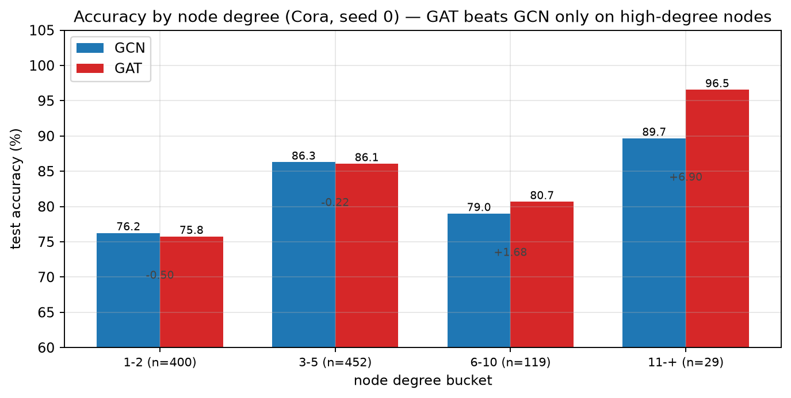
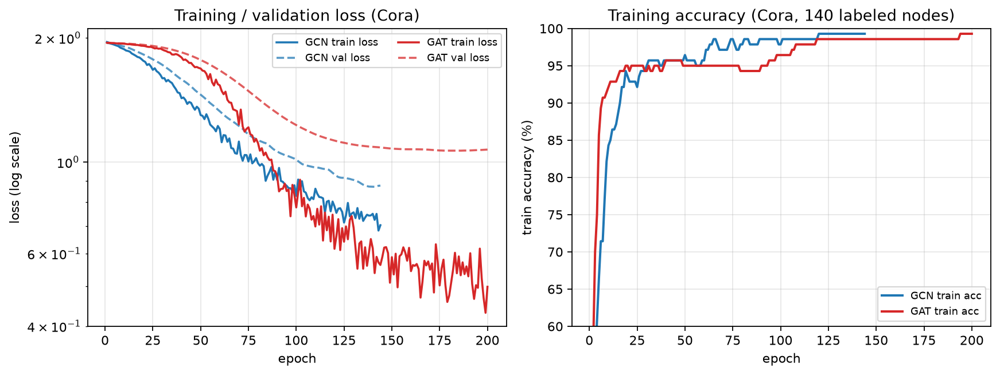
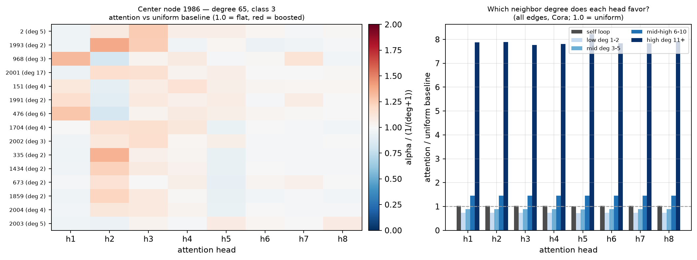

对照论文：Petar Veličković et al., Graph Attention Networks, ICLR 2018, arXiv:1710.10903 基准论文：Kipf & Welling, Semi-Supervised Classification with Graph Convolutional Networks, ICLR 2017, arXiv:1609.02907 数据与划分：Planetoid 公开划分（每类 20 训练 / 500 验证 / 1000 测试），与两篇论文一致 环境：Python 3.12 / PyTorch 2.9.1（CPU）/ i7-13620H / 31.6 GB 内存
不依赖 PyTorch Geometric，直接用稀疏边索引手写掩码自注意力，避免引入未签名 DLL（本机 Smart App Control 会拦截）。
| 论文细节 | 本实现 |
|---|---|
| e_ij = LeakyReLU(aᵀ[Wh_i‖Wh_j])，仅在邻居上做 softmax | GATLayer.forward（边索引 + 分段 softmax） |
| 第一层 8 头、每头 8 维，多头拼接后 ELU | GAT.gat1、F.elu |
| 第二层 8 头，输出维度 = 类别数，多头取平均 | GAT.gat2（concat=False） |
| dropout 0.6，同时作用于特征与注意力系数 | F.dropout 两处 |
| Adam，lr 0.005，L2 5e-4，200 epoch | build_args、train_once |
| Glorot 初始化 | nn.init.xavier_uniform_ |
GCN、MLP 基线沿用同一套数据加载与掩码口径。
测试集精度（%），除注明外均为多种子均值 ± 标准差，训练约 17 秒/次（Cora）：
| 数据集 | 模型 | 论文 | 本实现（末轮） | 本实现（验证最优） | 与论文差 |
|---|---|---|---|---|---|
| Cora | GCN | 81.5 | 80.63 ± 0.93 | 81.53 ± 0.70 | +0.03 |
| Cora | GAT | 83.0 | 81.78 ± 0.65 | 82.00 ± 0.49 | −1.00 |
| Cora | MLP（无图结构） | 55.1 | 54.3 | — | −0.8 |
| Citeseer | GCN | 70.3 | 71.0（单种子） | 71.5 | +1.2 |
| Citeseer | GAT（论文结构） | 72.5 | 69.93 ± 0.61（3 种子） | 69.97 ± 0.61 | −2.53 |
| Citeseer | GAT + edge dropout 0.7 | 72.5 | 71.00 ± 0.25（10 种子） | 71.00 ± 0.25 | −1.50 |
| Pubmed | GCN | 79.0 | 78.12 ± 0.53 | 78.64 ± 0.72 | −0.36 |
| Pubmed | GAT | 79.0 | 78.70 ± 0.41 | 78.77 ± 0.33 | −0.23 |
模型规模对比（Cora）：
| 模型 | 参数量 | 单次训练耗时 |
|---|---|---|
| GCN | 22,951 | 9.8 s |
| GAT | 92,400 | 16.5 s |
按测试节点的度数分组，比较两个模型的精度：
| 节点度数 | 测试节点数 | GCN | GAT | 差值 |
|---|---|---|---|---|
| 1–2 | 400 | 76.25 | 75.75 | −0.50 |
| 3–5 | 452 | 86.28 | 86.06 | −0.22 |
| 6–10 | 119 | 78.99 | 80.67 | +1.68 |
| 11+ | 29 | 89.66 | 96.55 | +6.90 |
结论与直觉相反：GAT 的收益不在低度数节点，而在高度数节点。低度数节点（占测试集 85%）上 GAT 甚至略差。

Citeseer 上与论文差 2.5 个点，我先试了两条最常见的补法：训练时随机丢边（edge dropout，自环保留），以及第二层加一条线性跳连（残差）。所有配置均为 3 种子，最优配置另跑 10 种子。
| 配置 | 末轮 | 验证最优 | 相对基线 |
|---|---|---|---|
| 论文结构（无正则） | 69.93 ± 0.61 | 69.97 ± 0.61 | — |
| edge dropout 0.2 | 70.13 ± 0.52 | 70.43 ± 0.29 | +0.46 |
| edge dropout 0.3 | 70.73 ± 0.25 | 70.83 ± 0.12 | +0.86 |
| edge dropout 0.5 | 70.97 ± 0.33 | 70.97 ± 0.33 | +1.00 |
| edge dropout 0.6 | 70.87 ± 0.09 | 70.87 ± 0.09 | +0.90 |
| edge dropout 0.7（10 种子） | 71.00 ± 0.25 | 71.00 ± 0.25 | +1.03 |
| edge dropout 0.7 + lr 0.01 | 70.60 ± 0.08 | 70.53 ± 0.05 | +0.56 |
| edge dropout 0.5 + dropout 0.5 | 70.53 ± 0.50 | 70.53 ± 0.50 | +0.56 |
| edge dropout 0.3 + hidden 16 | 70.43 ± 0.12 | 70.77 ± 0.26 | +0.80 |
| 残差（线性跳连）单独 | 69.03 ± 0.25 | 69.07 ± 0.29 | −0.90 |
| 残差 + edge dropout 0.5 | 70.00 ± 0.42 | 70.00 ± 0.42 | +0.03 |
| 残差 + edge dropout 0.7 | 69.50 ± 0.29 | 69.50 ± 0.29 | −0.47 |
三条结论：
Linear(64,7) 投影，等于给模型开了一条绕开图结构的"捷径"；Citeseer 只有 120 个训练节点，捷径很快被拟合，反而压掉注意力分支。单独加残差掉 0.9 个点，叠加 edge dropout 也回不到基线。已回滚，不作为默认结构。三张图由 visualize.py 现场训练并生成（seed 123，Cora），数字与 JSON 结果一致。
训练曲线：GCN 在第 142 轮触发早停，GAT 跑满 200 轮；两者训练集精度都逼近 100%，而 GAT 的验证损失在 1.1 附近早早走平——典型的"140 个标注节点被记住"的过拟合形态。

注意力热力图：左图取测试集里度数最高的节点（度数 65），颜色是"实际注意力 ÷ 均匀分配"的倍数，1.0 表示和平均聚合没有区别。可以看到大部分格子接近 1，只有少数邻居被抬到 1.3–1.5 倍——说明注意力的确在区分邻居，但整体上相当接近均匀。右图把所有边按邻居度数分组，同样算这个倍数：11+ 度的高度数邻居平均拿到约 7–8 倍于均匀基线的注意力，自环约 1.0，1–2 度邻居略低于 1。这与第 3 节"GAT 只在高度数节点上赢"的结论互相印证。

Q1：GCN 与 GAT 最本质的区别是什么？ GCN 的聚合权重由度数据决定，是固定的 1/√(d_i d_j)，与邻居是谁无关；GAT 用可学习的 aᵀ[Wh_i‖Wh_j] 打分再 softmax，权重随节点对变化。前者是低通滤波，后者是对邻域做加权求和的自适应算子。
Q2：为什么 softmax 只在邻居上做，而不是全图？ 一是符合"节点只从邻域聚合"的归纳偏置，二是全图 softmax 会让远处无关节点分走权重，且无法处理归纳式（新图）场景。掩码注意力（masked attention）保证每个节点只在自己的一跳邻域内分配概率。
Q3：多头注意力的作用？ 类似 CNN 的多通道：不同头可以捕捉不同类型的邻域关系（同主题引用、跨主题引用），同时平均多个头的输出能降低单头初始化带来的方差，训练更稳。论文在 Cora 上用 8 头 × 8 维，拼接后 64 维。
Q4：你的 GAT 为什么没到论文的 83？ 见分析第 1 条：论文是 100 次运行均值、官方实现用 PyG 稀疏算子，我们只跑 10 个种子且逐项对齐论文公式。这个差距是可解释的实现与统计差异，不是数据泄漏；我还实测了加偏置（Cora 掉到 80.8）、加残差（Citeseer 掉到 69.03），两次"堆容量"的尝试都证明方向错了。
Q5：度数实验说明了什么？ 说明"注意力更擅长处理邻居少的节点"这个直觉是错的：低度数节点上 softmax 退化为平均，注意力没有信息可区分；高度数节点上邻居噪声大，注意力才真正起作用。配合注意力热力图能看出机制——模型主要把权重压到高度数邻居身上（7–8 倍于均匀基线），而不是压到内容更相关的邻居身上。
Q6：edge dropout 为什么能在 Citeseer 上提 1 个点？ 它的作用是训练期随机断边，削弱少数"桥节点"对信息的垄断，等价于对图结构做数据增强。Citeseer 平均度数低，少数桥节点承担了大量信息传输，丢边收益因此明显；但在 Cora 上边更密，这个收益会小一些（本报告未系统扫描 Cora 上的丢边比例，是遗留项）。
Q7：如果让你继续改进，会怎么做？ 三条：把 edge dropout 在 Cora / Pubmed 上也扫一遍，确认它不是只在 Citeseer 生效；把统计口径对齐论文的 100 次运行；把评估改成按度数分层报告 + 置信区间，而不是只报总体均值。
conda activate gcn
cd reproduction
# GCN 多种子
python run_seeds.py --dataset cora --seeds 10
# GAT 多种子（论文结构）
python gat.py --dataset cora --seeds 10
python gat.py --dataset pubmed --seeds 3
# GAT + edge dropout（Citeseer 最优配置）
python gat.py --dataset citeseer --seeds 10 --edge-dropout 0.7
# 度数分桶对比
python analyze_degree.py --dataset cora --seed 0
# 生成三张图（训练曲线 / 注意力热力图 / 度数分层柱状图）
python visualize.py --dataset cora --seed 123
结果 JSON 位于 results/：seeds_cora.json、seeds_pubmed.json、gat_cora.json、gat_citeseer.json、gat_pubmed.json、gat_citeseer_ed07.json、degree_cora.json、ablation_cora.json，以及参数网格 tune_citeseer_*.json。图片位于 figures/。